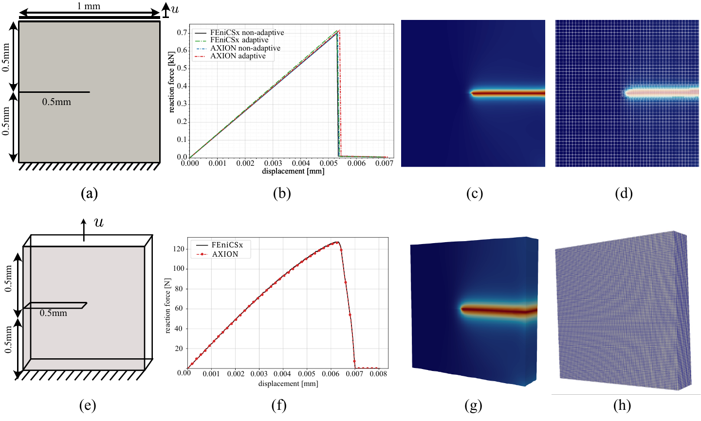
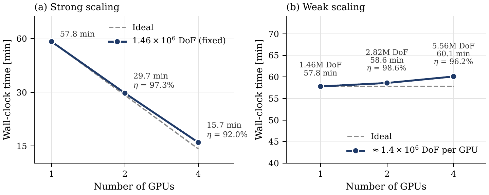
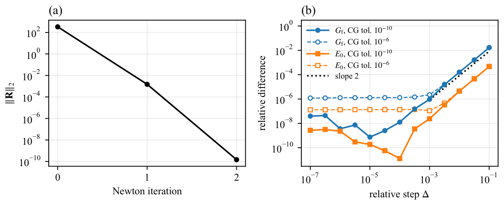
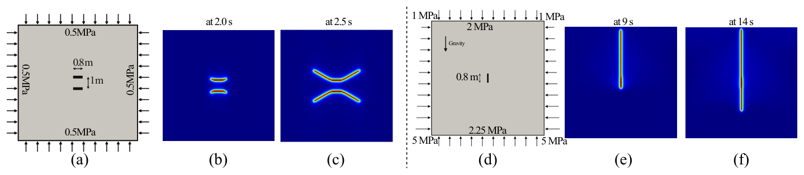
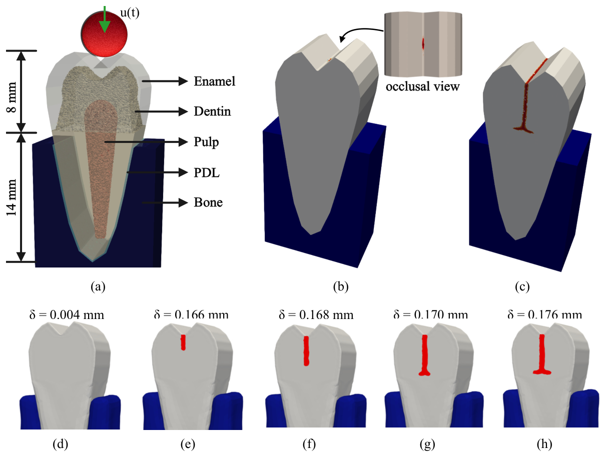
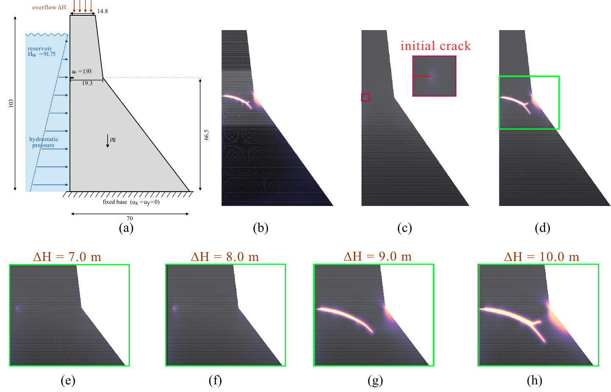

Phase-field fracture with the AT2 and PF-CZM models sharing one element definition — the first physics module of Axion.
Module 01 · Available
A demanding first test: fine resolution along an unknown crack path, bound-constrained damage, and repeated nonlinear solves over a loading history.
α(d) = d², ω(d) = (1 − d)². Brittle fracture without an elastic threshold. The history-driven damage subproblem is linear and symmetric positive definite: one Newton step with CG, followed by a projection onto [0, 1].
α(d) = 2d − d² with a rational degradation function calibrated to a traction–separation law. Brittle and cohesive fracture with a finite elastic threshold, insensitive to the length scale. Its non-convex damage subproblem is solved by a projected Jacobi iteration.
Pore pressure enters as a third field. The residuals are written once as weak forms; every block of the tangent, including the derivatives of the phase-field-dependent fluid properties, follows from automatic differentiation.
Module 01 · Verification
The canonical mode-I benchmark in two and three dimensions, AT2 model.

Module 01 · Performance
Full loading history of every example. Double precision, NVIDIA RTX Pro 6000 Blackwell GPU; CPU reference: serial FEniCSx on an Apple M4 Max.
| Example | DoF | FEniCSx (1 CPU) | Axion (1 GPU) | Time ratio |
|---|---|---|---|---|
| 2D mode I (AT2), uniform | 3.08 × 10⁴ | 172.23 min | 4.55 min | 37.9× |
| 2D mode I (AT2), adaptive | 1.13 × 10⁴ | 7.43 min | 2.41 min | 3.1× |
| 3D mode I (AT2) | 1.46 × 10⁶ | 324.2 min | 57.8 min | 5.6× |
| Hydraulic fracture | 3.80 × 10⁵ | – | 97 min a 319 min b | – |
| 3D premolar (PF-CZM) | 6.87 × 10⁵ | – | 335 min | – |
| Koyna dam (AT2) | 9.6 × 10⁷ | – | 390 min | – |
a Two parallel notches, 50 time steps. b Single vertical notch, 280 time steps. The time ratio is a speedup at identical discretization only for the uniform two-dimensional case; the other two rows compare different meshes, and in three dimensions Axion uses a looser staggered tolerance (10⁻³ against 10⁻⁵).


Module 01 · Practical-scale problems
Three problems solved with the same solver and element kernels as the benchmarks.


